Code
# read engine data. Hypothesis is that
data(engine)
with(engine, plot(size, wear, xlab = "Engine capacity", ylab="Wear Index"))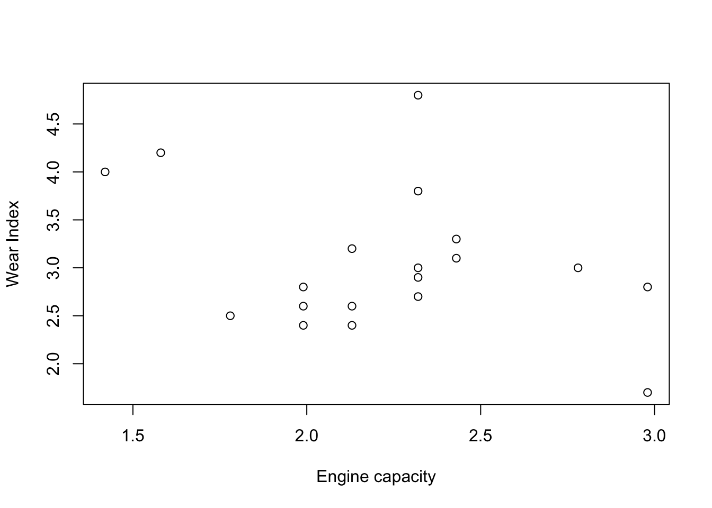
gamm - for mixed models, uses nlme to fitgam - can be used more general than exponentialjagam - interface to JAGS for bayesian estiamtionlme4 in backend insteadSmooth functions in “mgcv”:
s()- for univariate smooths, isotropic smooths, and random effectste() - tensor product smooths constructed from singly pernalized marginal smoothsti() - tensor product interactions with marginal smooth and lower order… for smooth anova modelst2() alternative tensor product smooth construction,useful with gamm4 package. `Smooth terms in GAMS, bs = "" - tp - low rank, thin plate splines, isotropic smoothers. Isotropic means that rotation of the covariate will not change the result of smoothing. thin plates don’t have “knots”, a truncated eigen-decomposition is used for rank reduction. low rank means fewer coefficients than data to smooth. - ds - duchon splines - cr - cubic regression spline - cs - shrinkage version of cubic splines - cc - cyclic cubic regression splines - sos - splines on the sphere - ps - psplines, b-spline basis and perform well generally - cp - cyclic version of p-spline
4.2 of Wood.
Example on Engine data. Hypothesis is that larger the engine copacity, the faster the engine will wear out.
# read engine data. Hypothesis is that
data(engine)
with(engine, plot(size, wear, xlab = "Engine capacity", ylab="Wear Index"))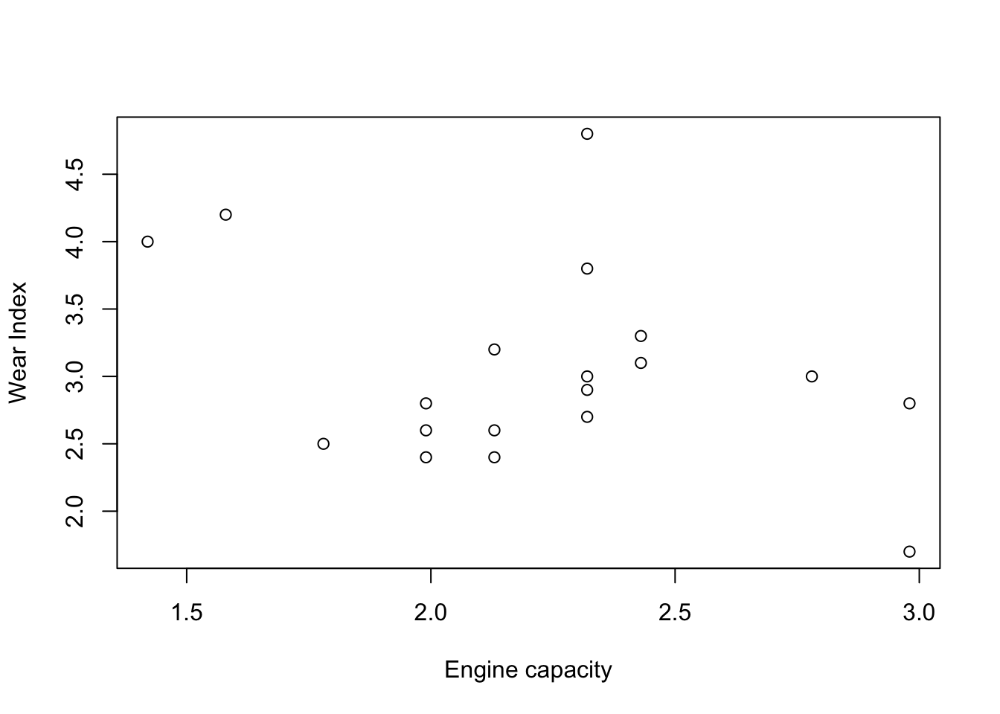
xj are the knotsx is the data.# function for generating tent functions, the basis function
tf <- function(x, xj, j) {
dj <- xj*0
dj[j] <- 1
approx(xj, dj, x)$y
}
tf.X <- function(x,xj) {
# tent function basis matrix given data x, and knot sequence xj
nk <- length(xj); n <- length(x)
X <- matrix(NA, n, nk)
for (j in 1:nk) {
X[,j] <- tf(x,xj,j)
}
X
}sj <- seq(min(engine$size), max(engine$size), length=6)
X <- tf.X(engine$size,sj)
b <- lm(wear~X-1, data=engine)
s <- seq(min(engine$size), max(engine$size), length = 200) # prediction data
Xp <- tf.X(s,sj) # prediction matrix
plot(engine$size, engine$wear, main = "piecewise linear estimate without smoothness")
lines(s, Xp %*% coef(b))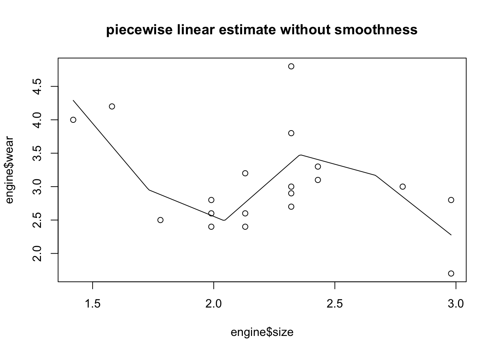
cool, looks reasonable, but should introduce a penalty for the smoothness of the function
We wish to penalize the parameters with some function
\begin{aligned} || y-X\beta ||^2 + \lambda \beta'D'D\beta \\ = \bigg\| \begin{bmatrix} y \\ 0 \end{bmatrix} - \begin{bmatrix}X \\ \sqrt{\lambda}D\end{bmatrix}\bigg\|^2 \end{aligned} For example, the penalty can be expressed in the matrix form
\begin{aligned} \lambda \sum_{j=2}^{k-1}f(x^*_{j-1} - 2f(x^*_j) + f(x^*_{j+1}))^2 \end{aligned}
diff(diag(5), differences=2) [,1] [,2] [,3] [,4] [,5]
[1,] 1 -2 1 0 0
[2,] 0 1 -2 1 0
[3,] 0 0 1 -2 1?diff#' penalized regression fit
#'
#' @param y response variable
#' @param x covariate
#' @param xj knot locations
#' @param sp smoothing parameter
#'
#' @return
#' @export
#'
#' @examples
prs.fit <- function(y,x, xj, sp) {
X <- tf.X(x, xj) ## model matrix
D <- diff(diag(length(xj)), differences=2) ## sqrt penalty, diff applied columnwise
X <- rbind(X, sqrt(sp)*D) # augmented model matrix
y <- c(y, rep(0, nrow(D))) # augmented data
lm(y~X-1)
}
# fit the model
sj <- seq(min(engine$size), max(engine$size), length = 20) ## knots
b <- prs.fit(engine$wear, engine$size, sj, 2) # smoothing parameter = 2
# prediction data, with same knot locations
s <- seq(min(engine$size), max(engine$size), length = 200) # prediction data
Xp <- tf.X(s,sj)
with(engine, plot(size, wear, main = "smoothed estimate with lambda = 2"))
lines(s, Xp %*% coef(b))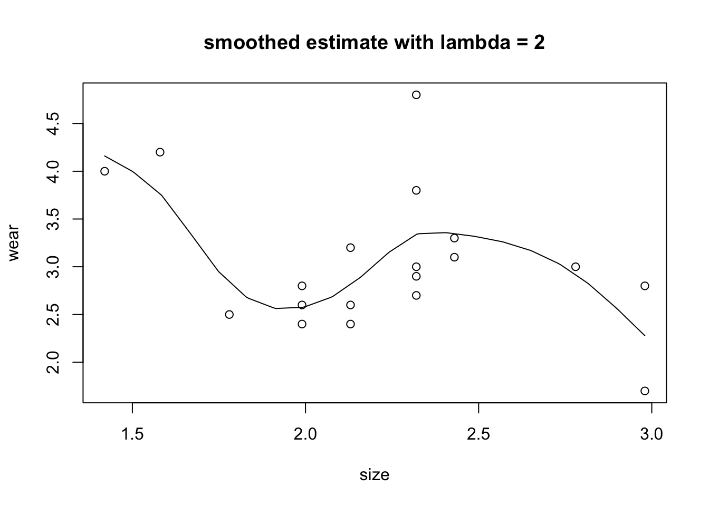
# specifying your own smoother
library(mgcv); library(MASS) ## load for mcycle data
Attaching package: 'MASS'The following object is masked from 'package:dplyr':
selectsm <- smoothCon(s(times, k=10), data = mcycle, knots=NULL)[[1]]
beta <- coef(lm(mcycle$accel~sm$X-1))
# create predictions
times <- seq(0, 60, length = 200)
Xp <- PredictMat(sm, data.frame(times = times)) # get matrix mapping beta to spline predictions at times
with(mcycle, plot(times, accel))
lines(times, Xp %*% beta)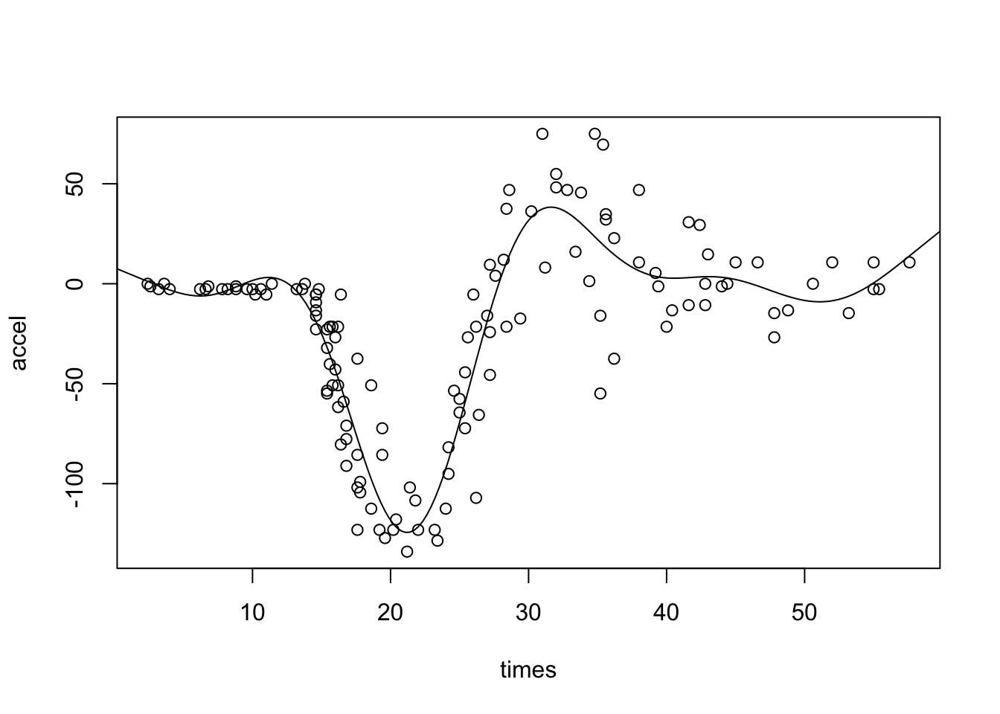
data(brain)
brain <- brain[brain$medFPQ > 5e-3,] # exclude 2 outliers
m0 <- gam(medFPQ ~ s(Y,X,k=100), data=brain)
gam.check(m0) # general diagnostics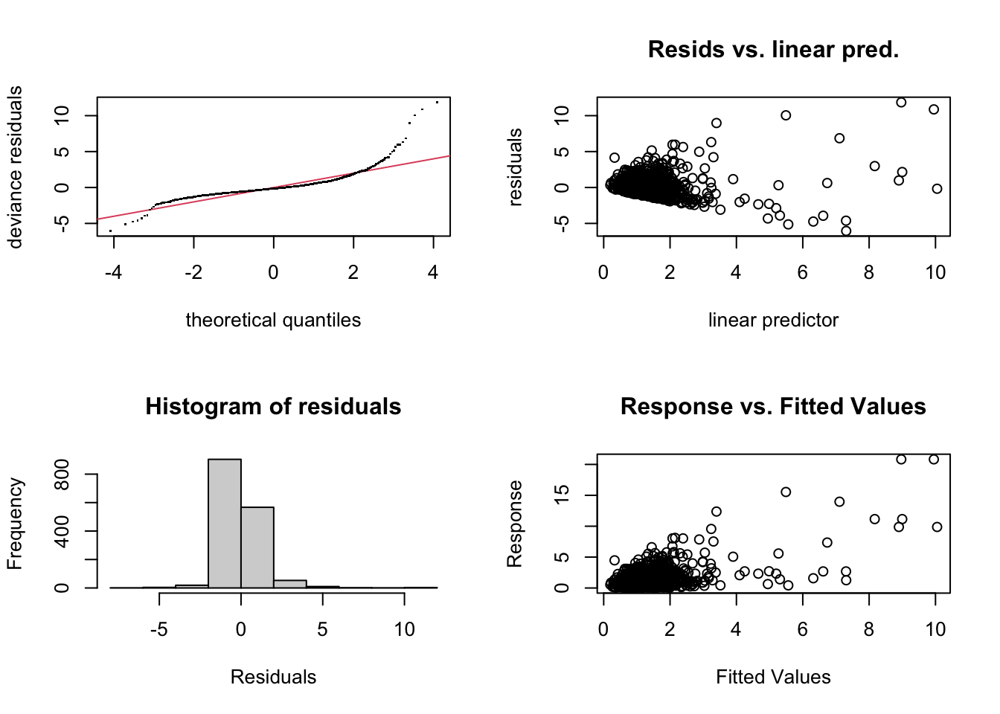
Method: GCV Optimizer: magic
Smoothing parameter selection converged after 6 iterations.
The RMS GCV score gradient at convergence was 6.236018e-05 .
The Hessian was positive definite.
Model rank = 100 / 100
Basis dimension (k) checking results. Low p-value (k-index<1) may
indicate that k is too low, especially if edf is close to k'.
k' edf k-index p-value
s(Y,X) 99.0 86.8 0.86 <2e-16 ***
---
Signif. codes: 0 '***' 0.001 '**' 0.01 '*' 0.05 '.' 0.1 ' ' 1k' gives the maximum possible EDF for smooth df.Residual plots look terrible, variance obviously increasing with mean. Assuming that there’s a power relationship with mean-variance,
\begin{aligned} var(y_i) \propto \mu_i^\beta \end{aligned}
e <- residuals(m0); fv <- fitted(m0)
lm(log(e^2) ~ log(fv)) # log \sigma^2 ~ log mean
Call:
lm(formula = log(e^2) ~ log(fv))
Coefficients:
(Intercept) log(fv)
-1.961 1.912 means that \beta \approx 2, implying that variance increases with square of the mean, so this is the gamma distribution. We could use the log link for the generalized linear family
qplot(brain$X, brain$Y, color = brain$medFPQ) + theme_test()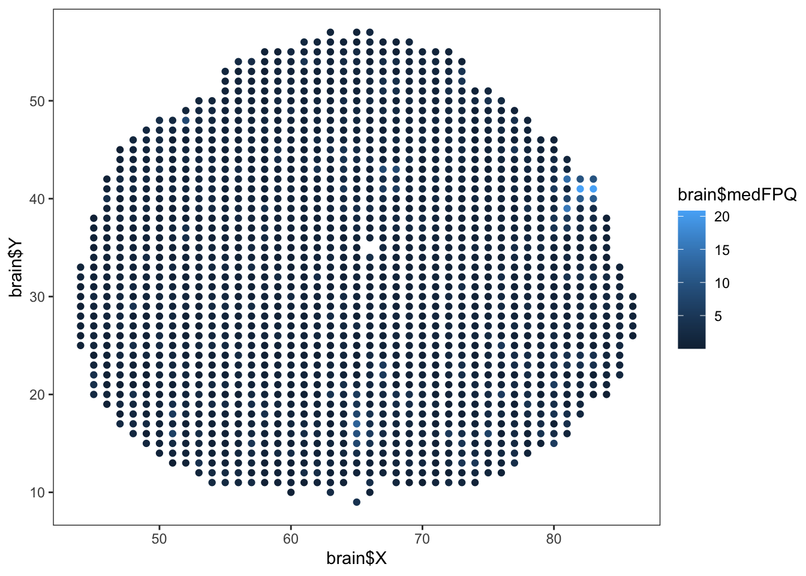
# 4th root transformation for stabilization
m1 <- gam(medFPQ^.25 ~ s(Y,X, k=100), data=brain)
m2 <- gam(medFPQ ~ s(Y,X, k=100), family = Gamma(link=log), data=brain)
gam.check(m1)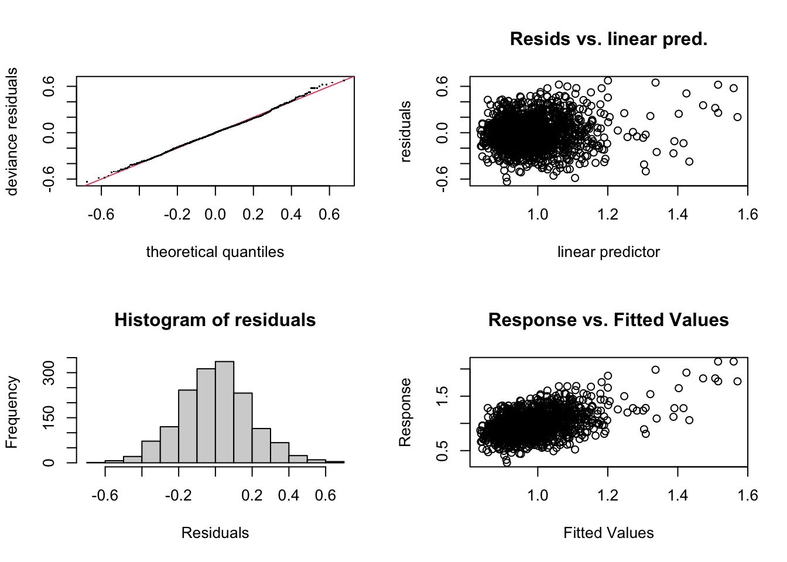
Method: GCV Optimizer: magic
Smoothing parameter selection converged after 4 iterations.
The RMS GCV score gradient at convergence was 4.811308e-06 .
The Hessian was positive definite.
Model rank = 100 / 100
Basis dimension (k) checking results. Low p-value (k-index<1) may
indicate that k is too low, especially if edf is close to k'.
k' edf k-index p-value
s(Y,X) 99.0 64.5 0.92 <2e-16 ***
---
Signif. codes: 0 '***' 0.001 '**' 0.01 '*' 0.05 '.' 0.1 ' ' 1# gam.check(m2) # similar, residuals look bettermean(fitted(m1)^4); mean(fitted(m2)); mean(brain$medFPQ)[1] 0.9855539[1] 1.211483[1] 1.250302mean(fitted(m1)); mean(brain$medFPQ^.25)[1] 0.9832189[1] 0.9832189The last value is the actual mean, so it makes sense that the link mean is the most accurate
# m1 unbiased on 4th root scale vs unbiased on response scale in m2...
vis.gam(m2, plot.type="contour", too.far=.03, color = "gray", n.grid=60, zlim=c(-1, 2))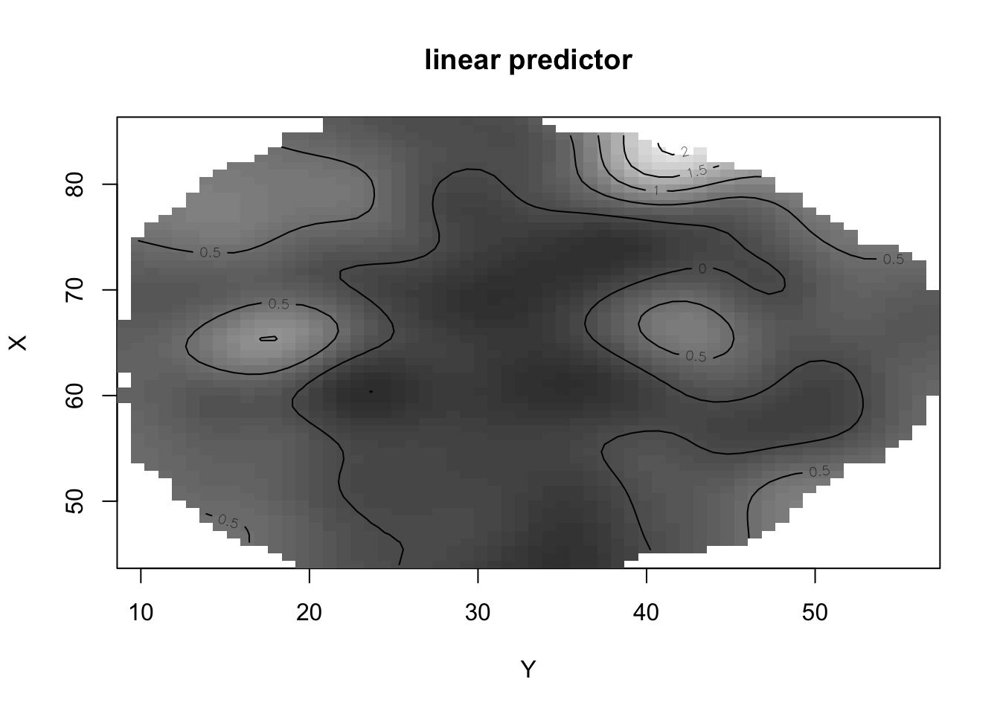
m2
Family: Gamma
Link function: log
Formula:
medFPQ ~ s(Y, X, k = 100)
Estimated degrees of freedom:
60.6 total = 61.61
GCV score: 0.6216871 # try the additive model
m3 <- gam(medFPQ ~ s(Y, k=30) + s(X, k=30), data = brain, family = Gamma(link=log))
m3
Family: Gamma
Link function: log
Formula:
medFPQ ~ s(Y, k = 30) + s(X, k = 30)
Estimated degrees of freedom:
9.58 20.20 total = 30.77
GCV score: 0.6453502 GCV score is higher, so it’s probably not better…and the aic comparison confirms this
AIC(m2, m3) # m2 is lower df AIC
m2 62.61062 3322.826
m3 31.77467 3409.491It makes sense that the additive model is not selected, because there’s no evidence of a longitudinal/latitude effect in strips. What about isotropic or tensor product smooths?
tm <- gam(medFPQ ~ te(Y,X,k=10), data = brain, family = Gamma(link=log))
tm1 <- gam(medFPQ ~ s(Y, k=10, bs="cr") + s(X, bs="cr", k=10) + ti(X,Y, k=10), data=brain, family = Gamma(link=log))
AIC(m2, tm, tm1) # selects the isotropic spline. df AIC
m2 62.61062 3322.826
tm 60.34768 3336.805
tm1 57.08366 3333.671In summary, the models we consider are
\begin{aligned} \log(\mu_i) &= f_1(Y_i, X_i), \qquad medFPQ \sim Gamma \end{aligned}
# is there an interaction now?
anova(tm1) # the p-value for the interaction term is significant.
Family: Gamma
Link function: log
Formula:
medFPQ ~ s(Y, k = 10, bs = "cr") + s(X, bs = "cr", k = 10) +
ti(X, Y, k = 10)
Approximate significance of smooth terms:
edf Ref.df F p-value
s(Y) 8.258 8.750 14.526 < 2e-16
s(X) 7.494 8.314 6.959 < 2e-16
ti(X,Y) 39.332 49.891 2.291 1.34e-06# Symmetry with "by"
brain$Xc <- abs(brain$X - 64.5)
brain$right <- as.numeric(brain$X < 64.5)
m.sy <- gam(medFPQ ~ s(Y, Xc, k=100), family = Gamma(link = log), data=brain) # symmetric
m.as <- gam(medFPQ ~ s(Y, Xc, k=100) + s(Y, Xc, k=100, by = right), family = Gamma(link = log), data=brain) # asymmetry modelm.sy
Family: Gamma
Link function: log
Formula:
medFPQ ~ s(Y, Xc, k = 100)
Estimated degrees of freedom:
51.4 total = 52.44
GCV score: 0.6489799 m.as # has a better GCV scroe, indicating that this model is better and by AIC it says the same thing.
Family: Gamma
Link function: log
Formula:
medFPQ ~ s(Y, Xc, k = 100) + s(Y, Xc, k = 100, by = right)
Estimated degrees of freedom:
50.5 44.7 total = 96.2
GCV score: 0.6176281 anova(m.as) # p-value for the smooth "right" term seems to be far from 0.
Family: Gamma
Link function: log
Formula:
medFPQ ~ s(Y, Xc, k = 100) + s(Y, Xc, k = 100, by = right)
Approximate significance of smooth terms:
edf Ref.df F p-value
s(Y,Xc) 50.48 65.99 4.344 <2e-16
s(Y,Xc):right 44.72 59.21 2.457 <2e-167.4 in Simon Wood book
data(chicago)
ap0 <- gam(death~s(time, bs="cr", k=200) + pm10median + so2median + o3median + tmpd, data = chicago, family = poisson)
gam.check(ap0)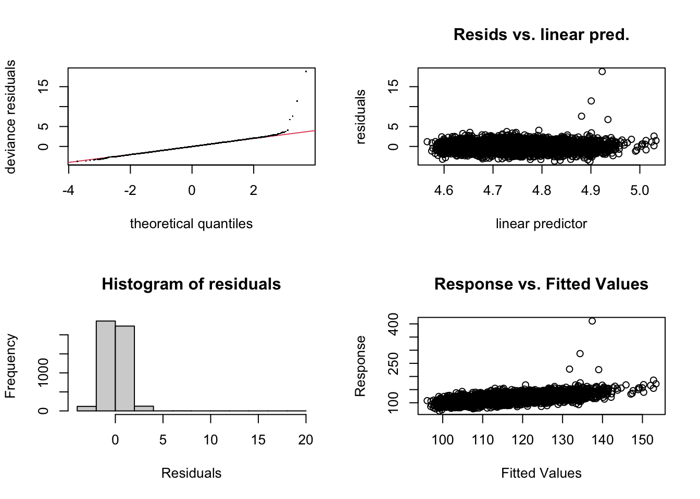
Method: UBRE Optimizer: outer newton
full convergence after 3 iterations.
Gradient range [3.514596e-08,3.514596e-08]
(score 0.2546689 & scale 1).
Hessian positive definite, eigenvalue range [0.004247567,0.004247567].
Model rank = 204 / 204
Basis dimension (k) checking results. Low p-value (k-index<1) may
indicate that k is too low, especially if edf is close to k'.
k' edf k-index p-value
s(time) 199 169 0.92 <2e-16 ***
---
Signif. codes: 0 '***' 0.001 '**' 0.01 '*' 0.05 '.' 0.1 ' ' 1qqplot is obviously quite proble
par(mfrow = c(2,1))
plot(ap0, n = 1000) # plot the smooth functions that make it up
# n - needs to be several times larger than the effective degrees of freedom
plot(ap0, residuals = TRUE, n = 1000)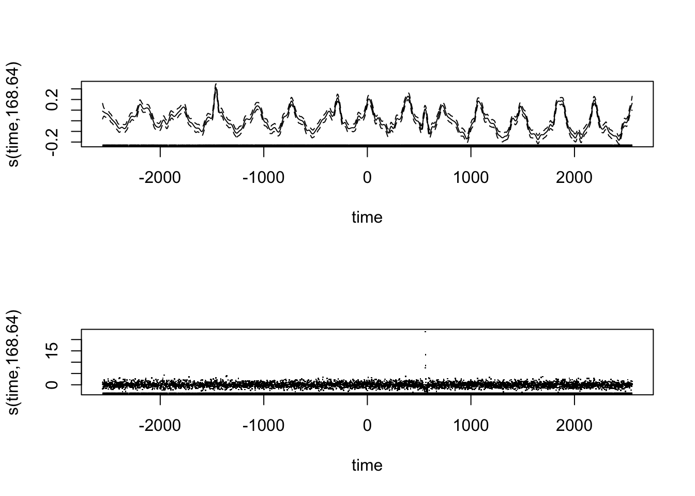
ap1 <- gam(death ~ s(time, bs = "cr", k=200) + s(pm10median, bs = "cr") + s(so2median, bs = "cr") + s(o3median, bs = "cr") + s(tmpd, bs = "cr"), data = chicago, family = poisson)
gam.check(ap1) # honestly not that much better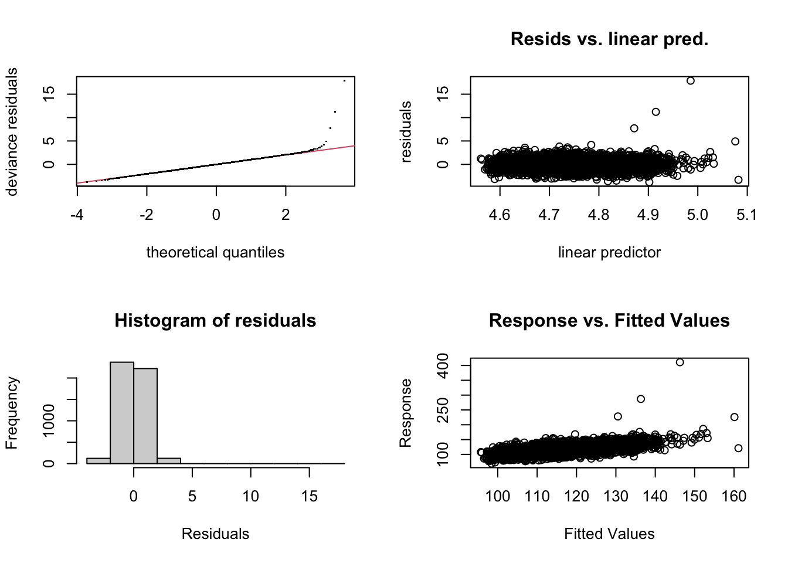
Method: UBRE Optimizer: outer newton
full convergence after 8 iterations.
Gradient range [-6.661707e-07,4.670663e-08]
(score 0.2410737 & scale 1).
Hessian positive definite, eigenvalue range [5.217842e-05,0.004273638].
Model rank = 236 / 236
Basis dimension (k) checking results. Low p-value (k-index<1) may
indicate that k is too low, especially if edf is close to k'.
k' edf k-index p-value
s(time) 199.00 167.93 0.94 <2e-16 ***
s(pm10median) 9.00 6.86 1.02 0.90
s(so2median) 9.00 7.38 0.99 0.17
s(o3median) 9.00 1.58 1.00 0.38
s(tmpd) 9.00 8.27 1.02 0.96
---
Signif. codes: 0 '***' 0.001 '**' 0.01 '*' 0.05 '.' 0.1 ' ' 1# confirming that I know where poisson residuals are coming from
residuals(ap1, type = "pearson")[1:10] [1] 0.7543849 -1.8266695 1.1255760 0.7299294 0.6915362 -1.1494885
[7] 0.3019724 0.3816246 -0.8354141 -1.6209453# chicago$death - predict(ap1)
predict(ap1) %>% length()[1] 4841y <- chicago %>% filter(!is.na(pm10median), !is.na(death), !is.na(so2median), !is.na(tmpd)) %>%
pull(death)
yhat <- predict(ap1, type = "response")
cbind(((y - yhat) / sqrt(yhat))[1:10],
residuals(ap1, type = "pearson")[1:10]) [,1] [,2]
1 0.7543849 0.7543849
3 -1.8266695 -1.8266695
4 1.1255760 1.1255760
6 0.7299294 0.7299294
7 0.6915362 0.6915362
8 -1.1494885 -1.1494885
9 0.3019724 0.3019724
11 0.3816246 0.3816246
12 -0.8354141 -0.8354141
13 -1.6209453 -1.6209453# Consider the single index model
# ?single.index
# because we're studying air pollution, there's probably some lag involved, or weights thereof
lagard <- function(x, n.lag = 6) {
n <- length(x); X <- matrix(NA, n, n.lag)
for (i in 1:n.lag) X[i:n, i] <- x[i:n-i+1] # set the next column, starting at i.
X
}
lagard(1:5, n.lag = 3) # probably most clear just to look at the model matrix here. [,1] [,2] [,3]
[1,] 1 NA NA
[2,] 2 1 NA
[3,] 3 2 1
[4,] 4 3 2
[5,] 5 4 3dat <- list(lag = matrix(0:5, nrow(chicago), 6, byrow = TRUE))
dat$death <- chicago$death
dat$time <- chicago$time
dat$pm10 <- lagard(chicago$pm10median)
dat$o3 <- lagard(chicago$o3)
dat$tmp <- lagard(chicago$tmp)
si <- function(theta, dat, opt = TRUE) {
alpha <- c(1, theta) ## alpha defined via unconstrained theta
kk <- sqrt(sum(alpha^2)); alpha <- alpha/kk ## ||alpha || = 1
o3 <- dat$o3 %*% alpha;
tmp <- dat$tmp %*% alpha
pm10 <- dat$pm10 %*% alpha ## re-weight laggard covariates
b <- bam(dat$death ~ s(dat$time, k = 200, bs="cr") + s(pm10, bs="cr") + te(o3, tmp, k=8), family=poisson) ## fit the model
cat(".") # give user something to watch
if (opt) return(b$gcv.ubre) else {
b$alpha <- alpha ## add alpha to model object
b$J <- outer(alpha, -theta/kk^2) ## get dalpha_i/dtheta_j
for (j in 1:length(theta)) b$J[j+1,j] <- b$J[j+1, j] + 1 /kk
return(b)
}
}
# f1 <- optim(rep(1, 5), si, method = "BFGS", hessian=TRUE, dat = dat)
# save(f1, file = "f1.RData") # The results from f1 took forever to run, almost an hour, so save the results and just load it.
load("f1.RData")
apsi <- si(f1$par, dat, opt = FALSE).apsi$alpha[1] 0.03419156 0.67333186 0.63917561 0.25879701 0.24601994 -0.09699472